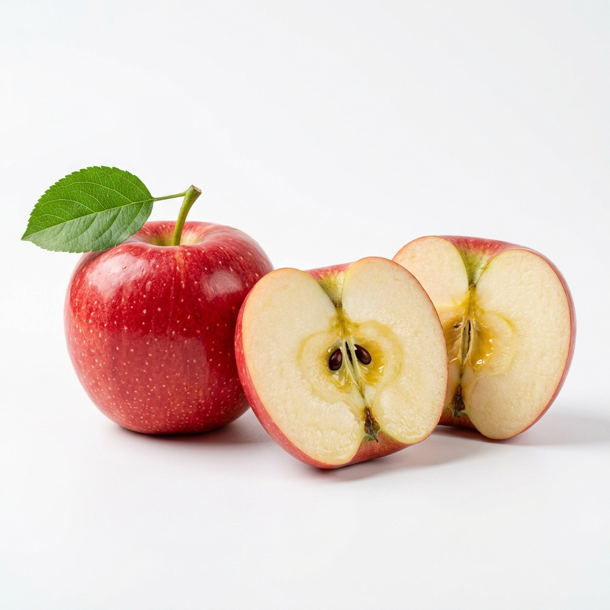
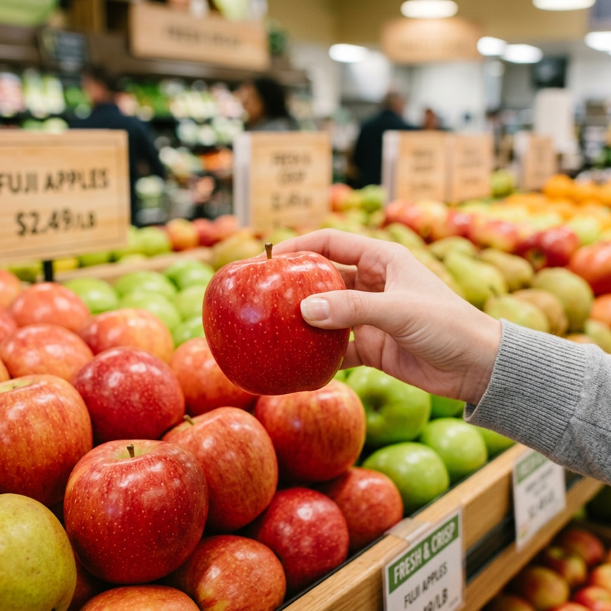

<!DOCTYPE html>
<html lang="ko">
<head>
  <meta charset="UTF-8" />
  <meta name="viewport" content="width=device-width, initial-scale=1.0, maximum-scale=1.0, user-scalable=no" />
  <title>이마트 신선 가이드 | 사과 선별 &amp; 신선 보관 통합 솔루션</title>
  
  <!-- Pretendard Font -->
  <link rel="stylesheet" as="style" crossorigin href="https://cdn.jsdelivr.net/gh/orioncactus/pretendard@v1.3.9/dist/web/static/pretendard.min.css" />
  
  <!-- Tailwind CSS v3 CDN -->
  <script src="https://cdn.tailwindcss.com"></script>
  <script>
    tailwind.config = {
      theme: {
        extend: {
          colors: {
            emart: {
              yellow: '#FFBF00',
              yellowHover: '#E5AB00',
              yellowLight: '#FFF9E5',
              green: '#0C5B45',
              greenLight: '#E8F5EE',
              greenDark: '#084030',
              dark: '#1A1A1A',
              gray: '#666666',
              lightGray: '#8E9491',
              bg: '#F5F6F8',
              border: '#E8ECEF',
              red: '#FF3B30',
            }
          },
          fontFamily: {
            sans: ['Pretendard', '-apple-system', 'BlinkMacSystemFont', 'Segoe UI', 'Roboto', 'sans-serif'],
          },
          boxShadow: {
            'card': '0 4px 20px -2px rgba(0, 0, 0, 0.05)',
            'sticky': '0 -4px 20px rgba(0, 0, 0, 0.06)',
            'float': '0 8px 30px rgba(0, 0, 0, 0.12)',
            'toast': '0 10px 25px -5px rgba(0, 0, 0, 0.3)',
          }
        }
      }
    }
  </script>

  <!-- React 18 & ReactDOM 18 -->
  <script crossorigin src="https://unpkg.com/react@18/umd/react.production.min.js"></script>
  <script crossorigin src="https://unpkg.com/react-dom@18/umd/react-dom.production.min.js"></script>
  <!-- Babel Standalone for JSX -->
  <script src="https://unpkg.com/@babel/standalone/babel.min.js"></script>
  <!-- Canvas Confetti -->
  <script src="https://cdn.jsdelivr.net/npm/canvas-confetti@1.9.2/dist/confetti.browser.min.js"></script>

  <style>
    /* Custom Smooth scroll and touch optimization */
    html {
      scroll-behavior: smooth;
      -webkit-tap-highlight-color: transparent;
    }
    body {
      background-color: #E9ECEF;
      font-family: 'Pretendard', -apple-system, sans-serif;
    }
    /* Hide scrollbar for clean horizontal chips */
    .no-scrollbar::-webkit-scrollbar {
      display: none;
    }
    .no-scrollbar {
      -ms-overflow-style: none;
      scrollbar-width: none;
    }
    @keyframes pulseScale {
      0%, 100% { transform: scale(1); }
      50% { transform: scale(1.04); }
    }
    .pulse-soft {
      animation: pulseScale 2.2s infinite ease-in-out;
    }
    @keyframes slideUp {
      from { transform: translate(-50%, 20px); opacity: 0; }
      to { transform: translate(-50%, 0); opacity: 1; }
    }
    .toast-anim {
      animation: slideUp 0.25s cubic-bezier(0.16, 1, 0.3, 1) forwards;
    }
  </style>
</head>
<body class="antialiased text-[#1A1A1A]">
  <div id="root"></div>

  <script type="text/babel">
    const { useState, useEffect, useRef } = React;

    // --- SVG Icon Components for Zero-dependency Stability ---
    const IconArrowLeft = () => (
      <svg className="w-5 h-5" fill="none" stroke="currentColor" viewBox="0 0 24 24">
        <path strokeLinecap="round" strokeLinejoin="round" strokeWidth="2" d="M15 19l-7-7 7-7" />
      </svg>
    );

    const IconSearch = () => (
      <svg className="w-5 h-5" fill="none" stroke="currentColor" viewBox="0 0 24 24">
        <path strokeLinecap="round" strokeLinejoin="round" strokeWidth="2" d="M21 21l-6-6m2-5a7 7 0 11-14 0 7 7 0 0114 0z" />
      </svg>
    );

    const IconShare = () => (
      <svg className="w-5 h-5" fill="none" stroke="currentColor" viewBox="0 0 24 24">
        <path strokeLinecap="round" strokeLinejoin="round" strokeWidth="2" d="M8.684 13.342C8.886 12.938 9 12.482 9 12c0-.482-.114-.938-.316-1.342m0 2.684a3 3 0 110-2.684m0 2.684l6.632 3.316m-6.632-6l6.632-3.316m0 0a3 3 0 105.367-2.684 3 3 0 00-5.367 2.684zm0 9.316a3 3 0 105.368 2.684 3 3 0 00-5.368-2.684z" />
      </svg>
    );

    const IconCart = () => (
      <svg className="w-5 h-5" fill="none" stroke="currentColor" viewBox="0 0 24 24">
        <path strokeLinecap="round" strokeLinejoin="round" strokeWidth="2" d="M16 11V7a4 4 0 00-8 0v4M5 9h14l1 12H4L5 9z" />
      </svg>
    );

    const IconHeart = ({ filled }) => (
      <svg className={`w-5 h-5 ${filled ? 'fill-[#FF3B30] text-[#FF3B30]' : 'text-gray-400'}`} fill="none" stroke="currentColor" viewBox="0 0 24 24">
        <path strokeLinecap="round" strokeLinejoin="round" strokeWidth="2" d="M4.318 6.318a4.5 4.5 0 000 6.364L12 20.364l7.682-7.682a4.5 4.5 0 00-6.364-6.364L12 7.636l-1.318-1.318a4.5 4.5 0 00-6.364 0z" />
      </svg>
    );

    const IconCheck = () => (
      <svg className="w-4 h-4" fill="none" stroke="currentColor" viewBox="0 0 24 24">
        <path strokeLinecap="round" strokeLinejoin="round" strokeWidth="3" d="M5 13l4 4L19 7" />
      </svg>
    );

    const IconQrCode = () => (
      <svg className="w-5 h-5" fill="none" stroke="currentColor" viewBox="0 0 24 24">
        <path strokeLinecap="round" strokeLinejoin="round" strokeWidth="2" d="M12 4v1m6 11h2m-6 0h-2v4m0-11v3m0 0h.01M12 12h4.01M16 20h4M4 12h4m12 0h.01M5 8h2a1 1 0 001-1V5a1 1 0 00-1-1H5a1 1 0 00-1 1v2a1 1 0 001 1zm12 0h2a1 1 0 001-1V5a1 1 0 00-1-1h-2a1 1 0 00-1 1v2a1 1 0 001 1zM5 20h2a1 1 0 001-1v-2a1 1 0 00-1-1H5a1 1 0 00-1 1v2a1 1 0 001 1z" />
      </svg>
    );

    const IconStar = () => (
      <svg className="w-3.5 h-3.5 fill-[#FFBF00] text-[#FFBF00]" viewBox="0 0 20 20">
        <path d="M9.049 2.927c.3-.921 1.603-.921 1.902 0l1.07 3.292a1 1 0 00.95.69h3.462c.969 0 1.371 1.24.588 1.81l-2.8 2.034a1 1 0 00-.364 1.118l1.07 3.292c.3.921-.755 1.688-1.54 1.118l-2.8-2.034a1 1 0 00-1.175 0l-2.8 2.034c-.784.57-1.838-.197-1.539-1.118l1.07-3.292a1 1 0 00-.364-1.118L2.98 8.72c-.783-.57-.38-1.81.588-1.81h3.461a1 1 0 00.951-.69l1.07-3.292z" />
      </svg>
    );

    const IconChevronDown = ({ open }) => (
      <svg className={`w-4 h-4 transition-transform duration-200 ${open ? 'rotate-180 text-emart-green' : 'text-gray-400'}`} fill="none" stroke="currentColor" viewBox="0 0 24 24">
        <path strokeLinecap="round" strokeLinejoin="round" strokeWidth="2.5" d="M19 9l-7 7-7-7" />
      </svg>
    );

    // --- Main App Component ---
    function App() {
    // Tabs: 'guide' (선별 3대 기준) | 'storage' (신선 보관 가이드) | 'checklist' (자가진단)
    const [activeTab, setActiveTab] = useState('guide');
      const [storageMode, setStorageMode] = useState('short'); // 'short' | 'long' | 'leftover'
      const [ethyleneTab, setEthyleneTab] = useState('bad'); // 'bad' (피해 품목) | 'good' (후숙 짝꿍)
      const [openFaq, setOpenFaq] = useState({ 0: true }); // Default open first FAQ
      const [purchaseDate, setPurchaseDate] = useState('2026-10-19');
      
      const [liked, setLiked] = useState(false);
      const [showESLModal, setShowESLModal] = useState(false);
      const [feedback, setFeedback] = useState(null); // 'good' | 'bad'
      const [toast, setToast] = useState('');
      
      const [checklist, setChecklist] = useState({
        surface: false,
        firmness: false,
        weight: false,
      });
      const [scaleWeight, setScaleWeight] = useState('left'); // 'left' | 'right'
      const [surfaceMode, setSurfaceMode] = useState('good'); // 'good' | 'bad'
      const [completed, setCompleted] = useState(false);

      const guideRef = useRef(null);
      const completeRef = useRef(null);

      // Show toast helper
      const showToastMessage = (msg) => {
        setToast(msg);
        setTimeout(() => {
          setToast((prev) => (prev === msg ? '' : prev));
        }, 3000);
      };

      const toggleChecklist = (key) => {
        const updated = { ...checklist, [key]: !checklist[key] };
        setChecklist(updated);
        if (updated.surface && updated.firmness && updated.weight) {
          triggerConfetti();
          showToastMessage('🎉 3대 선별 기준 통과! 최상품 사과입니다.');
        }
      };

      const toggleFaq = (index) => {
        setOpenFaq(prev => ({
          ...prev,
          [index]: !prev[index]
        }));
      };

      const triggerConfetti = () => {
        if (window.confetti) {
          window.confetti({
            particleCount: 80,
            spread: 70,
            origin: { y: 0.65 },
            colors: ['#FFBF00', '#0C5B45', '#FF3B30', '#4CAF50']
          });
        }
      };

      const handleShare = () => {
        const shareData = {
          title: '이마트 신선 가이드: 사과 보관 및 선별 꿀팁',
          text: '사과는 1알씩 랩으로 싸서 보관하면 2주 넘게 아삭해요! 에틸렌 가스 주의보 & 보관법 확인해보세요.',
          url: window.location.href,
        };

        if (navigator.share) {
          navigator.share(shareData).catch(() => {
            copyToClipboard();
          });
        } else {
          copyToClipboard();
        }
      };

      const copyToClipboard = () => {
        if (navigator.clipboard) {
          navigator.clipboard.writeText(window.location.href);
          showToastMessage('🔗 사과 보관법 링크가 클립보드에 복사되었습니다!');
          triggerConfetti();
        } else {
          showToastMessage('사과 보관법 링크가 준비되었습니다.');
        }
      };

      const handleComplete = () => {
        setCompleted(true);
        triggerConfetti();
        showToastMessage('장보기 기준 확인이 완료되었습니다!');
        setTimeout(() => {
          if (completeRef.current) {
            completeRef.current.scrollIntoView({ behavior: 'smooth' });
          }
        }, 100);
      };

      // D-Day calculation logic based on purchaseDate
      const calculateDDay = () => {
        const base = new Date(purchaseDate);
        const today = new Date('2026-10-19'); // Consistent reference date
        const diffTime = today - base;
        const diffDays = Math.max(0, Math.floor(diffTime / (1000 * 60 * 60 * 24)));
        const remainGoldenDays = Math.max(0, 14 - diffDays);
        return { diffDays, remainGoldenDays };
      };

      const { diffDays, remainGoldenDays } = calculateDDay();
      const isAllChecked = checklist.surface && checklist.firmness && checklist.weight;

      return (
        <div className="min-h-screen flex flex-col items-center justify-start pb-20 relative">
          
          {/* Toast Notification Popup */}
          {toast && (
            <div className="fixed bottom-20 z-50 left-1/2 -translate-x-1/2 w-11/12 max-w-[390px] bg-gray-900/95 backdrop-blur-md text-white px-4 py-3 rounded-2xl shadow-toast flex items-center justify-between text-xs font-semibold toast-anim border border-gray-700/50">
              <span className="flex items-center gap-2">
                <span className="text-emart-yellow text-sm">💡</span>
                <span>{toast}</span>
              </span>
              <button 
                onClick={() => setToast('')}
                className="text-gray-400 hover:text-white ml-2 text-sm font-bold"
              >
                ✕
              </button>
            </div>
          )}

          {/* Top Bar for Simulator / Debug Mode */}
          <div className="w-full max-w-[430px] bg-emart-dark text-white px-4 py-2 text-xs flex justify-between items-center shadow-md">
            <span className="flex items-center gap-1.5 font-medium text-emart-yellow">
              <span className="w-2 h-2 rounded-full bg-emerald-400 animate-ping"></span>
              오프라인 매장 ESL 연계 모드
            </span>
            <button 
              onClick={() => setShowESLModal(true)}
              className="bg-white/10 hover:bg-white/20 text-white px-2.5 py-1 rounded-lg flex items-center gap-1 font-semibold transition"
            >
              <IconQrCode />
              매대 전자라벨(ESL) 보기
            </button>
          </div>

          {/* Main Mobile App Container */}
          <div className="w-full max-w-[430px] bg-white min-h-screen shadow-2xl relative flex flex-col">
            
            {/* 1. 이마트몰 표준 헤더 (Sticky Topbar) */}
            <header className="sticky top-0 z-40 bg-white border-b border-emart-border flex items-center justify-between px-3 h-13 py-2.5">
              <div className="flex items-center gap-2">
                <button 
                  onClick={() => showToastMessage('이마트 신선 코너 메인으로 이동합니다.')}
                  className="p-1.5 text-gray-700 hover:text-black"
                  aria-label="뒤로가기"
                >
                  <IconArrowLeft />
                </button>
                <div className="flex items-baseline cursor-pointer" onClick={() => setActiveTab('guide')}>
                  <span className="text-xl font-black tracking-tight text-emart-yellow">e</span>
                  <span className="text-xl font-black tracking-tight text-[#222]">mart</span>
                </div>
              </div>

              <div className="flex items-center gap-3 text-gray-700">
                <button 
                  onClick={() => showToastMessage('과일 품종 검색창이 열립니다.')}
                  className="p-1 hover:text-black" 
                  aria-label="검색"
                >
                  <IconSearch />
                </button>
                <button 
                  onClick={handleShare} 
                  className="p-1 hover:text-black transition active:scale-90" 
                  aria-label="공유하기"
                >
                  <IconShare />
                </button>
                <button 
                  onClick={() => showToastMessage('장바구니에 사과 1봉이 담겨 있습니다.')}
                  className="p-1 hover:text-black relative" 
                  aria-label="장바구니"
                >
                  <IconCart />
                  <span className="absolute -top-1 -right-1 bg-emart-yellow text-black font-extrabold text-[9px] w-4 h-4 rounded-full flex items-center justify-center">2</span>
                </button>
              </div>
            </header>

            {/* Offline Store Location Indicator */}
            <div className="bg-emart-yellowLight px-3.5 py-1.5 text-xs text-[#554200] flex items-center justify-between border-b border-amber-200">
              <div className="flex items-center gap-1.5 font-medium">
                <span className="text-sm">📍</span>
                <span>이마트 금정점 · <b>1층 과일/사과 매대</b></span>
              </div>
              <span className="text-[11px] bg-white px-2 py-0.5 rounded-full font-bold text-emart-green border border-emerald-200 shadow-2xs">
                ESL 스캔 연결됨
              </span>
            </div>

            {/* 2. 상품 메인 비주얼 (Hero) */}
            <div className="relative bg-[#FAFAFA] border-b border-gray-100">
              <div className="w-full aspect-square relative overflow-hidden flex items-center justify-center">
                
                <div className="absolute bottom-3 right-3 bg-black/60 text-white text-[11px] px-2.5 py-0.5 rounded-full font-medium">
                  1 / 3
                </div>
              </div>
            </div>

            {/* 3. 상품명 및 가격 영역 (이마트몰 표준 UI) */}
            <div className="px-4 py-4 border-b border-gray-100">
              <div className="flex items-center gap-1.5 text-xs text-gray-500 mb-1">
                <span>과일</span>
                <span>&gt;</span>
                <span>국산과일</span>
                <span>&gt;</span>
                <span className="text-gray-800 font-semibold">사과 (부사)</span>
              </div>

              <h1 className="text-lg font-bold text-gray-900 leading-snug">
                [파머스픽] 보조개 사과 (부사/후지) 1.5kg/봉
              </h1>

              {/* Rating */}
              <div className="flex items-center gap-1 mt-1.5">
                <div className="flex text-amber-400">
                  <IconStar /><IconStar /><IconStar /><IconStar /><IconStar />
                </div>
                <span className="text-xs font-bold text-gray-800 ml-1">4.9</span>
                <span className="text-xs text-gray-400">(2,418건 리뷰)</span>
                <span className="text-gray-300 mx-1">|</span>
                <span className="text-xs text-emart-green font-semibold">재구매율 91%</span>
              </div>

              {/* Price Info */}
              <div className="mt-3 flex items-baseline gap-2">
                <span className="text-xl font-black text-emart-red">22%</span>
                <span className="text-2xl font-black text-gray-950 tracking-tight">9,980<span className="text-base font-bold ml-0.5">원</span></span>
                <span className="text-sm text-gray-400 line-through">12,900원</span>
              </div>
              <div className="text-xs text-gray-500 mt-0.5 font-medium">
                (100g당 665원) · 오프라인 매장 단독 특가
              </div>
            </div>

            {/* 4. 장보기 패스 - 신선 가이드 전용 하이라이트 배너 */}
            <div className="bg-gradient-to-r from-amber-500 via-amber-400 to-yellow-400 p-4 text-black relative overflow-hidden">
              <div className="relative z-10">
                <div className="inline-flex items-center gap-1.5 bg-black/85 text-emart-yellow px-2 py-0.5 rounded-full text-[11px] font-extrabold mb-1.5 shadow-xs">
                  <span>🍎 장보기 패스 FRESH GUIDE</span>
                </div>
                <h2 className="text-xl font-black tracking-tight text-gray-950">
                  매대에서 고르고, 집에서 신선하게!
                </h2>
                <p className="text-xs text-gray-900 mt-1 font-medium leading-relaxed">
                  실패 없는 <b>3대 선별법</b>과 수분 손실을 90% 막아주는 <b>신선 보관 꿀팁</b>을 확인하세요.
                </p>

                {/* Quick anchor chips (4개) */}
                <div className="grid grid-cols-4 gap-1.5 mt-3">
                  <button 
                    onClick={() => setActiveTab('guide')}
                    className="bg-white/90 hover:bg-white rounded-xl p-2 text-center shadow-2xs transition active:scale-95"
                  >
                    <span className="block text-base">🍎</span>
                    <span className="text-[10px] font-extrabold text-gray-900 block mt-0.5">01 겉면</span>
                    <span className="text-[9px] text-gray-500 block truncate">색택/멍</span>
                  </button>
                  <button 
                    onClick={() => setActiveTab('guide')}
                    className="bg-white/90 hover:bg-white rounded-xl p-2 text-center shadow-2xs transition active:scale-95"
                  >
                    <span className="block text-base">✋</span>
                    <span className="text-[10px] font-extrabold text-gray-900 block mt-0.5">02 단단함</span>
                    <span className="text-[9px] text-gray-500 block truncate">탄력감</span>
                  </button>
                  <button 
                    onClick={() => setActiveTab('guide')}
                    className="bg-white/90 hover:bg-white rounded-xl p-2 text-center shadow-2xs transition active:scale-95"
                  >
                    <span className="block text-base">⚖️</span>
                    <span className="text-[10px] font-extrabold text-gray-900 block mt-0.5">03 무게감</span>
                    <span className="text-[9px] text-gray-500 block truncate">과즙밀도</span>
                  </button>
                  <button 
                    onClick={() => setActiveTab('storage')}
                    className="bg-emart-dark text-white hover:bg-black rounded-xl p-2 text-center shadow-sm transition active:scale-95 ring-2 ring-emart-yellow"
                  >
                    <span className="block text-base">🧊</span>
                    <span className="text-[10px] font-extrabold text-emart-yellow block mt-0.5">★ 보관법</span>
                    <span className="text-[9px] text-gray-300 block truncate">밀봉·디데이</span>
                  </button>
                </div>
              </div>
            </div>

            {/* 5. 탭 메뉴 (3 Tabs: 선별 가이드 | 신선 보관 가이드 | 체크리스트) */}
            <div className="sticky top-13 z-30 bg-white border-b border-gray-200 grid grid-cols-3 shadow-2xs">
              <button 
                onClick={() => setActiveTab('guide')}
                role="tab"
                aria-selected={activeTab === 'guide'}
                className={`py-3 text-center text-xs font-bold transition border-b-2 flex flex-col items-center justify-center gap-0.5 min-h-[44px] ${activeTab === 'guide' ? 'border-emart-green text-emart-green' : 'border-transparent text-gray-500 hover:text-gray-800'}`}
              >
                <span>선별 가이드</span>
              </button>

              <button 
                onClick={() => setActiveTab('storage')}
                role="tab"
                aria-selected={activeTab === 'storage'}
                className={`py-3 text-center text-xs font-bold transition border-b-2 flex flex-col items-center justify-center gap-0.5 relative min-h-[44px] ${activeTab === 'storage' ? 'border-emart-green text-emart-green' : 'border-transparent text-gray-500 hover:text-gray-800'}`}
              >
                <span>신선 보관법</span>
              </button>

              <button 
                onClick={() => setActiveTab('checklist')}
                role="tab"
                aria-selected={activeTab === 'checklist'}
                className={`py-3 text-center text-xs font-bold transition border-b-2 flex flex-col items-center justify-center gap-0.5 min-h-[44px] ${activeTab === 'checklist' ? 'border-emart-green text-emart-green' : 'border-transparent text-gray-500 hover:text-gray-800'}`}
              >
                <span>체크리스트</span>
              </button>
            </div>

            {/* Content Area */}
            <div className="p-4 bg-[#F8F9FA] space-y-4 flex-1">

              {/* ========================================================= */}
              {/* TAB 1: 3대 선별 가이드 */}
              {/* ========================================================= */}
              {activeTab === 'guide' && (
                <div ref={guideRef} className="space-y-4">
                  
                  {/* Guide Card 1: 겉면 확인 */}
                  <div id="guide-surface" className="bg-white rounded-2xl p-4 shadow-card border border-gray-100">
                    <div className="flex items-center justify-between mb-3">
                      <div className="flex items-center gap-2">
                        <span className="w-6 h-6 rounded-full bg-emart-green text-white text-xs font-black flex items-center justify-center">
                          01
                        </span>
                        <h3 className="text-base font-extrabold text-gray-900">겉면 확인</h3>
                      </div>
                      <span className="text-[11px] font-semibold text-emart-green bg-emerald-50 px-2 py-0.5 rounded-full">
                        첫인상 선별
                      </span>
                    </div>

                    <p className="text-xs text-gray-600 leading-relaxed mb-3">
                      멍이나 깊은 상처가 없고, 햇빛을 골고루 받아 <b>밑동(꼭지 반대편)까지 은은한 노란빛·붉은빛</b>이 도는 것을 선택하세요.
                    </p>

                    {/* Good vs Bad Interactive Toggle Tabs */}
                    <div className="flex items-center justify-between bg-gray-100 p-1 rounded-xl mb-3">
                      <button 
                        onClick={() => setSurfaceMode('good')}
                        className={`flex-1 py-1.5 px-3 rounded-lg text-xs font-bold transition flex items-center justify-center gap-1.5 ${
                          surfaceMode === 'good' 
                            ? 'bg-emart-green text-white shadow-sm' 
                            : 'text-gray-600 hover:text-gray-900'
                        }`}
                      >
                        <span>✓</span>
                        <span>좋은 사과 보기</span>
                      </button>
                      <button 
                        onClick={() => setSurfaceMode('bad')}
                        className={`flex-1 py-1.5 px-3 rounded-lg text-xs font-bold transition flex items-center justify-center gap-1.5 ${
                          surfaceMode === 'bad' 
                            ? 'bg-red-500 text-white shadow-sm' 
                            : 'text-gray-600 hover:text-gray-900'
                        }`}
                      >
                        <span>✕</span>
                        <span>피할 사과 보기</span>
                      </button>
                    </div>

                    {/* Image comparison with Dynamic Switching */}
                    <div className="relative rounded-xl overflow-hidden border border-gray-100 mb-3 aspect-video bg-gray-50 shadow-inner">
                      
                      
                      {/* State Badge on Image */}
                      <div className="absolute top-2.5 left-2.5">
                        {surfaceMode === 'good' ? (
                          <span className="bg-emart-green/90 backdrop-blur-xs text-white text-[11px] font-extrabold px-2.5 py-1 rounded-lg shadow flex items-center gap-1">
                            <span>✓</span> 좋은 사과 예시
                          </span>
                        ) : (
                          <span className="bg-red-600/90 backdrop-blur-xs text-white text-[11px] font-extrabold px-2.5 py-1 rounded-lg shadow flex items-center gap-1">
                            <span>✕</span> 피할 사과 예시 (멍·상처)
                          </span>
                        )}
                      </div>

                      {/* Bottom Caption Overlay */}
                      <div className="absolute inset-x-0 bottom-0 bg-gradient-to-t from-black/85 via-black/50 to-transparent p-3 text-white text-[11px]">
                        {surfaceMode === 'good' ? (
                          <div>
                            <span className="font-extrabold text-emart-yellow block text-xs">POINT 01. 황금빛 기공 &amp; 고른 착색</span>
                            <p className="text-[10px] text-gray-200 mt-0.5">표면의 자연스러운 미세 반점(기공)과 엉덩이까지 은은한 노란빛은 당도가 잘 올랐다는 증거!</p>
                          </div>
                        ) : (
                          <div>
                            <span className="font-extrabold text-red-300 block text-xs">CHECK. 검붉은 멍 자국 &amp; 푸른 밑동</span>
                            <p className="text-[10px] text-gray-200 mt-0.5">손가락으로 세게 눌려 갈색 멍이 생겼거나, 꼭지·밑동이 시퍼런 초록빛인 것은 피하세요.</p>
                          </div>
                        )}
                      </div>
                    </div>

                    {/* Detailed explanation callout */}
                    <div className="p-3 rounded-xl border border-gray-100">
                      {surfaceMode === 'good' ? (
                        <div className="text-xs text-emerald-900 bg-emerald-50/80 p-3 rounded-lg flex items-start gap-2 border border-emerald-100">
                          <span className="text-emerald-600 font-bold text-sm">✓</span>
                          <div>
                            <b className="text-emerald-950 block mb-0.5">전체적으로 고른 붉은빛과 노란 밑동</b>
                            <p className="text-emerald-800 leading-relaxed">
                              꼭지 주변뿐만 아니라 엉덩이(꽃받침) 부위까지 녹색 기운이 빠지고 밝은 노란빛이 도는 사과가 충분히 익어 당도가 높습니다.
                            </p>
                          </div>
                        </div>
                      ) : (
                        <div className="text-xs text-red-900 bg-red-50/80 p-3 rounded-lg flex items-start gap-2 border border-red-100">
                          <span className="text-red-500 font-bold text-sm">✕</span>
                          <div>
                            <b className="text-red-950 block mb-0.5">푸른빛 밑동, 갈색 멍, 긁힌 상처 주의</b>
                            <p className="text-red-800 leading-relaxed">
                              밑부분이 짙은 초록색이면 덜 익어 떫을 수 있으며, 갈색으로 변색된 멍은 내부 과육이 이미 물러져 식감이 푸석할 확률이 높습니다.
                            </p>
                          </div>
                        </div>
                      )}
                    </div>
                  </div>

                  {/* Guide Card 2: 단단함 확인 */}
                  <div id="guide-firmness" className="bg-white rounded-2xl p-4 shadow-card border border-gray-100">
                    <div className="flex items-center justify-between mb-3">
                      <div className="flex items-center gap-2">
                        <span className="w-6 h-6 rounded-full bg-emart-green text-white text-xs font-black flex items-center justify-center">
                          02
                        </span>
                        <h3 className="text-base font-extrabold text-gray-900">단단함 확인</h3>
                      </div>
                      <span className="text-[11px] font-semibold text-emart-green bg-emerald-50 px-2 py-0.5 rounded-full">
                        식감 판별
                      </span>
                    </div>

                    <p className="text-xs text-gray-600 leading-relaxed mb-3">
                      엄지손가락으로 가볍게 쥐었을 때 푸석하게 들어가지 않고 <b>단단한 저항감이 있는 사과</b>가 아삭합니다.
                    </p>

                    <div className="relative rounded-xl overflow-hidden border border-gray-100 mb-3 aspect-video bg-gray-50">
                      
                      <div className="absolute inset-x-0 bottom-0 bg-gradient-to-t from-black/80 via-black/40 to-transparent p-2.5 text-white text-[11px]">
                        <span className="font-bold text-emart-yellow">TIP</span>
                        <p className="text-[10px] text-gray-200">꼭지가 마르지 않고 푸른빛을 띠고 있다면 수분이 꽉 찬 사과입니다.</p>
                      </div>
                    </div>

                    {/* Firmness Tip */}
                    <div className="bg-emerald-50/60 p-3 rounded-xl border border-emerald-100">
                      <div className="flex items-center gap-2 text-xs font-bold text-emart-green mb-1">
                        <span>💡</span>
                        <span>올바른 확인 방법</span>
                      </div>
                      <p className="text-[11px] text-gray-600 leading-relaxed">
                        손톱으로 누르면 과육에 멍이 들 수 있으니, <b>손가락 안쪽 면으로 부드럽게 감싸 쥐며</b> 단단한 탄력을 느껴보세요.
                      </p>
                    </div>
                  </div>

                  {/* Guide Card 3: 무게감 확인 */}
                  <div id="guide-weight" className="bg-white rounded-2xl p-4 shadow-card border border-gray-100">
                    <div className="flex items-center justify-between mb-3">
                      <div className="flex items-center gap-2">
                        <span className="w-6 h-6 rounded-full bg-emart-green text-white text-xs font-black flex items-center justify-center">
                          03
                        </span>
                        <h3 className="text-base font-extrabold text-gray-900">무게감 확인</h3>
                      </div>
                      <span className="text-[11px] font-semibold text-emart-green bg-emerald-50 px-2 py-0.5 rounded-full">
                        과즙·당도 판별
                      </span>
                    </div>

                    <p className="text-xs text-gray-600 leading-relaxed mb-3">
                      눈으로 보기에 크기가 비슷하다면, <b>양손에 하나씩 들었을 때 더 묵직하게 느껴지는 사과</b>를 고르세요.
                    </p>

                    {/* Interactive Scale UI */}
                    <div className="bg-white p-3.5 rounded-xl border border-gray-200 shadow-sm">
                      <div className="text-[11px] font-bold text-gray-700 text-center mb-2">
                        ⚖️ 양손 비교 테스트 (가상 저울)
                      </div>
                      
                      <div className="flex justify-around items-end h-24 pb-2 border-b-2 border-gray-300 relative">
                        {/* Left Apple */}
                        <div 
                          onClick={() => setScaleWeight('left')}
                          className={`flex flex-col items-center cursor-pointer transition-all duration-300 ${scaleWeight === 'left' ? 'translate-y-2' : '-translate-y-2'}`}
                        >
                          <span className="text-3xl">🍎</span>
                          <span className={`text-[10px] font-bold px-2 py-0.5 rounded-full mt-1 ${scaleWeight === 'left' ? 'bg-emart-green text-white' : 'bg-gray-100 text-gray-500'}`}>
                            사과 A (320g)
                          </span>
                          {scaleWeight === 'left' && <span className="text-[9px] text-emart-green font-bold">★ 과즙 가득!</span>}
                        </div>

                        {/* Balance Fulcrum */}
                        <div className="w-3 h-8 bg-gray-400 rounded-t"></div>

                        {/* Right Apple */}
                        <div 
                          onClick={() => setScaleWeight('right')}
                          className={`flex flex-col items-center cursor-pointer transition-all duration-300 ${scaleWeight === 'right' ? 'translate-y-2' : '-translate-y-2'}`}
                        >
                          <span className="text-3xl opacity-85">🍎</span>
                          <span className={`text-[10px] font-bold px-2 py-0.5 rounded-full mt-1 ${scaleWeight === 'right' ? 'bg-emart-green text-white' : 'bg-gray-100 text-gray-500'}`}>
                            사과 B (280g)
                          </span>
                          {scaleWeight === 'right' && <span className="text-[9px] text-emart-green font-bold">★ 가벼운 편</span>}
                        </div>
                      </div>

                      <p className="text-[11px] text-center text-gray-600 mt-2">
                        사과를 클릭해 무게를 비교해보세요. <b>수분과 당분이 풍부할수록 비중이 높아 묵직</b>합니다.
                      </p>
                    </div>
                  </div>

                  {/* Next Step Banner to Storage Guide */}
                  <div className="bg-gradient-to-r from-emerald-800 to-emart-green text-white p-4 rounded-2xl shadow-md flex items-center justify-between">
                    <div>
                      <span className="bg-emart-yellow text-black text-[9px] font-black px-2 py-0.5 rounded-full">STEP 2</span>
                      <h4 className="text-sm font-black mt-1">맛있는 사과를 고르셨나요?</h4>
                      <p className="text-[11px] text-emerald-100 mt-0.5">끝까지 아삭하게 먹는 사과 보관법을 알아보세요!</p>
                    </div>
                    <button 
                      onClick={() => setActiveTab('storage')}
                      className="bg-emart-yellow hover:bg-emart-yellowHover text-black text-xs font-black px-3 py-2 rounded-xl shadow transition shrink-0 active:scale-95"
                    >
                      보관법 보기 &gt;
                    </button>
                  </div>

                </div>
              )}

              {/* ========================================================= */}
              {/* TAB 2: 신선 보관 가이드 [★신규 추가 핵심 모듈] */}
              {/* ========================================================= */}
              {activeTab === 'storage' && (
                <div className="space-y-4">
                  
                  {/* Storage Intro Header */}
                  <div className="bg-white rounded-2xl p-4 shadow-card border border-emerald-100 relative overflow-hidden">
                    <div className="flex items-center gap-2 mb-1.5">
                      <span className="w-6 h-6 rounded-full bg-emart-green text-white text-xs font-black flex items-center justify-center">
                        ★
                      </span>
                      <h3 className="text-base font-extrabold text-gray-900">이마트 사과 신선 보관소</h3>
                      <span className="text-[10px] font-bold text-emart-green bg-emerald-50 px-2 py-0.5 rounded-full border border-emerald-200">
                        과학적 신선 관리
                      </span>
                    </div>
                    <p className="text-xs text-gray-600 leading-relaxed">
                      사과는 수확 후에도 활발히 호흡하며 수분을 날리고 에틸렌 가스를 내뿜습니다. <b>올바른 방법으로 보관하면 한 달 뒤에도 첫날의 아삭함</b>을 그대로 즐길 수 있습니다.
                    </p>
                  </div>

                  {/* 6.1 신규 기능 1: 상황별/기간별 맞춤 보관 3단계 솔루션 */}
                  <div className="bg-white rounded-2xl p-4 shadow-card border border-gray-100">
                    <div className="flex items-center justify-between mb-3">
                      <div>
                        <div className="flex items-center gap-1.5">
                          <span className="text-base">🧊</span>
                          <h4 className="text-sm font-black text-gray-900">상황별 맞춤 보관 3단 솔루션</h4>
                        </div>
                        <p className="text-[11px] text-gray-500 mt-0.5">소비 주기와 형태에 맞는 보관법을 선택하세요.</p>
                      </div>
                      <span className="text-[10px] font-bold text-amber-800 bg-amber-50 px-2 py-0.5 rounded-lg border border-amber-200">
                        필수 수칙
                      </span>
                    </div>

                    {/* Segmented Control Tabs */}
                    <div className="flex bg-gray-100 p-1 rounded-xl gap-1 mb-4">
                      <button 
                        onClick={() => setStorageMode('short')}
                        className={`flex-1 py-2 px-1 text-center rounded-lg text-xs font-bold transition flex flex-col items-center justify-center gap-0.5 ${
                          storageMode === 'short' 
                            ? 'bg-emart-green text-white shadow-sm' 
                            : 'text-gray-600 hover:text-gray-900'
                        }`}
                      >
                        <span>🌿 1~2주 단기</span>
                        <span className="text-[9px] opacity-80 font-normal">일상 소비</span>
                      </button>

                      <button 
                        onClick={() => setStorageMode('long')}
                        className={`flex-1 py-2 px-1 text-center rounded-lg text-xs font-bold transition flex flex-col items-center justify-center gap-0.5 ${
                          storageMode === 'long' 
                            ? 'bg-emart-green text-white shadow-sm' 
                            : 'text-gray-600 hover:text-gray-900'
                        }`}
                      >
                        <span>❄️ 한 달 이상</span>
                        <span className="text-[9px] opacity-80 font-normal">대용량/김치냉장고</span>
                      </button>

                      <button 
                        onClick={() => setStorageMode('leftover')}
                        className={`flex-1 py-2 px-1 text-center rounded-lg text-xs font-bold transition flex flex-col items-center justify-center gap-0.5 ${
                          storageMode === 'leftover' 
                            ? 'bg-emart-green text-white shadow-sm' 
                            : 'text-gray-600 hover:text-gray-900'
                        }`}
                      >
                        <span>🍎 남은 사과</span>
                        <span className="text-[9px] opacity-80 font-normal">갈변 방지</span>
                      </button>
                    </div>

                    {/* Mode 1: 1~2주 단기 보관 */}
                    {storageMode === 'short' && (
                      <div className="space-y-3">
                        <div className="bg-emerald-50/70 border border-emerald-200 rounded-xl p-3.5">
                          <div className="flex items-center justify-between mb-2">
                            <span className="text-xs font-black text-emerald-950 flex items-center gap-1">
                              <span>✓</span> 핵심 원칙: 1알씩 랩/위생백 개별 밀봉
                            </span>
                            <span className="text-[10px] bg-emart-green text-white px-2 py-0.5 rounded-full font-bold">
                              냉장 신선칸
                            </span>
                          </div>

                          <div className="grid grid-cols-2 gap-2 my-2 text-center">
                            <div className="bg-white p-2 rounded-lg border border-emerald-100 shadow-2xs">
                              <span className="text-[10px] text-gray-500 block">적정 온도</span>
                              <b className="text-xs text-emerald-800">0℃ ~ 2℃</b>
                            </div>
                            <div className="bg-white p-2 rounded-lg border border-emerald-100 shadow-2xs">
                              <span className="text-[10px] text-gray-500 block">적정 습도</span>
                              <b className="text-xs text-emerald-800">85% ~ 90%</b>
                            </div>
                          </div>

                          <div className="text-[11px] text-emerald-900 leading-relaxed space-y-1 mt-2">
                            <p><b>🔬 과학적 이유:</b> 사과는 수분을 지속 배출합니다. 개별 랩핑하면 <b>수분 손실을 90% 이상 억제</b>하여 과육이 푸석해지는 스펀지 현상을 막고, <b>에틸렌 가스가 다른 채소로 퍼지는 것을 원천 차단</b>합니다.</p>
                          </div>
                        </div>

                        {/* Step-by-step checklist card */}
                        <div className="bg-gray-50 rounded-xl p-3 border border-gray-200 space-y-2">
                          <span className="text-xs font-bold text-gray-800 block">📝 단기 보관 3단계 루틴</span>
                          <div className="flex items-start gap-2.5 text-xs text-gray-700">
                            <span className="w-5 h-5 rounded-full bg-emart-yellow text-gray-900 font-black text-[10px] flex items-center justify-center shrink-0 mt-0.5">1</span>
                            <div>
                              <b>물로 씻지 않은 상태 유지</b>
                              <p className="text-[11px] text-gray-500">천연 보호막(큐티클)을 유지하기 위해 먹기 직전에 세척합니다.</p>
                            </div>
                          </div>
                          <div className="flex items-start gap-2.5 text-xs text-gray-700">
                            <span className="w-5 h-5 rounded-full bg-emart-yellow text-gray-900 font-black text-[10px] flex items-center justify-center shrink-0 mt-0.5">2</span>
                            <div>
                              <b>식품용 랩으로 공기를 빼며 1알씩 밀착 랩핑</b>
                              <p className="text-[11px] text-gray-500">위생비닐백에 1알씩 넣고 입구를 매듭지어도 훌륭합니다.</p>
                            </div>
                          </div>
                          <div className="flex items-start gap-2.5 text-xs text-gray-700">
                            <span className="w-5 h-5 rounded-full bg-emart-yellow text-gray-900 font-black text-[10px] flex items-center justify-center shrink-0 mt-0.5">3</span>
                            <div>
                              <b>냉장고 야채·과일 신선칸에 단독 보관</b>
                              <p className="text-[11px] text-gray-500">일반 냉장실 선반보다 온습도가 안정적인 신선실이 명당입니다.</p>
                            </div>
                          </div>
                        </div>
                      </div>
                    )}

                    {/* Mode 2: 한 달 이상 장기 보관 */}
                    {storageMode === 'long' && (
                      <div className="space-y-3">
                        <div className="bg-blue-50/70 border border-blue-200 rounded-xl p-3.5">
                          <div className="flex items-center justify-between mb-2">
                            <span className="text-xs font-black text-blue-950 flex items-center gap-1">
                              <span>✓</span> 핵심 원칙: 키친타월 1차 + 지퍼백 2차 밀폐
                            </span>
                            <span className="text-[10px] bg-blue-700 text-white px-2 py-0.5 rounded-full font-bold">
                              김치냉장고
                            </span>
                          </div>

                          <div className="grid grid-cols-2 gap-2 my-2 text-center">
                            <div className="bg-white p-2 rounded-lg border border-blue-100 shadow-2xs">
                              <span className="text-[10px] text-gray-500 block">권장 보관 설정</span>
                              <b className="text-xs text-blue-800">야채/과일 (약냉 -1~1℃)</b>
                            </div>
                            <div className="bg-white p-2 rounded-lg border border-blue-100 shadow-2xs">
                              <span className="text-[10px] text-gray-500 block">최대 보관 기한</span>
                              <b className="text-xs text-blue-800">30일 ~ 45일</b>
                            </div>
                          </div>

                          <div className="text-[11px] text-blue-900 leading-relaxed mt-2">
                            <p><b>🔬 과학적 이유:</b> 키친타월이 온도 변화로 맺히는 <b>결로(물방울)를 흡수해 곰팡이를 방지</b>하고, 지퍼백이 저온 수분 유지를 도와 한 달 이상 갓 딴 듯한 아삭함을 유지합니다.</p>
                          </div>
                        </div>

                        {/* Critical Temperature Warning Callout */}
                        <div className="bg-red-50 border-l-4 border-red-500 p-3 rounded-r-xl">
                          <div className="flex items-center gap-1.5 text-xs font-bold text-red-700 mb-0.5">
                            <span>⚠️</span>
                            <span>김치냉장고 강냉(동해 위험) 주의!</span>
                          </div>
                          <p className="text-[11px] text-red-600 leading-relaxed">
                            사과의 어는점은 약 <b>-1.5℃ ~ -2.0℃</b>입니다. 김치냉장고를 '강냉'이나 '육류/생선 모드'로 두면 사과 과육 세포가 얼어붙어 <b>녹을 때 스펀지처럼 완전히 푸석</b>해집니다. 반드시 <b>'야채/과일 모드'</b>를 확인하세요!
                          </p>
                        </div>
                      </div>
                    )}

                    {/* Mode 3: 먹다 남은 깎은 사과 (갈변 방지) */}
                    {storageMode === 'leftover' && (
                      <div className="space-y-3">
                        <div className="bg-amber-50/70 border border-amber-200 rounded-xl p-3.5">
                          <div className="flex items-center justify-between mb-2">
                            <span className="text-xs font-black text-amber-950 flex items-center gap-1">
                              <span>✓</span> 핵심 원칙: 설탕물 1분 침지 후 밀폐 냉장
                            </span>
                            <span className="text-[10px] bg-amber-600 text-white px-2 py-0.5 rounded-full font-bold">
                              최대 48시간 황금빛
                            </span>
                          </div>

                          <div className="text-[11px] text-amber-900 leading-relaxed mt-1">
                            <p><b>🔬 갈변의 과학적 원리:</b> 껍질을 깎은 사과가 공기 중 산소와 만나면 <b>'폴리페놀 옥시다아제(PPO)'</b> 산화 효소가 작용해 갈색으로 변합니다. 설탕물이나 항산화 용액이 산소 접촉막을 형성해 갈변을 완벽히 차단합니다.</p>
                          </div>
                        </div>

                        {/* Golden Recipe Grid */}
                        <div className="space-y-2">
                          <span className="text-xs font-bold text-gray-800 block">🍯 추천 갈변 방지 황금 레시피 (택1)</span>
                          
                          <div className="bg-white p-2.5 rounded-xl border border-gray-200 flex items-center justify-between">
                            <div className="text-xs">
                              <b className="text-gray-900 block">1. 설탕물 침지법 (가장 추천 ★★★)</b>
                              <span className="text-[11px] text-gray-500">물 1컵(200ml) + 설탕 1큰술에 1분간 담그기</span>
                            </div>
                            <span className="text-[10px] bg-amber-100 text-amber-800 font-bold px-2 py-1 rounded-lg shrink-0">맛 변화 없음</span>
                          </div>

                          <div className="bg-white p-2.5 rounded-xl border border-gray-200 flex items-center justify-between">
                            <div className="text-xs">
                              <b className="text-gray-900 block">2. 레몬수 침지법 (상큼함 UP)</b>
                              <span className="text-[11px] text-gray-500">물 1컵 + 레몬즙 몇 방울 (비타민C 항산화 코팅)</span>
                            </div>
                            <span className="text-[10px] bg-emerald-100 text-emerald-800 font-bold px-2 py-1 rounded-lg shrink-0">샐러드용 강추</span>
                          </div>

                          <div className="bg-white p-2.5 rounded-xl border border-gray-200 flex items-center justify-between">
                            <div className="text-xs">
                              <b className="text-gray-900 block">3. 연한 소금물 침지법</b>
                              <span className="text-[11px] text-gray-500">물 1컵 + 소금 1/4 티스푼 살짝 풀기</span>
                            </div>
                            <span className="text-[10px] bg-gray-100 text-gray-700 font-bold px-2 py-1 rounded-lg shrink-0">전통 방식</span>
                          </div>
                        </div>

                        <p className="text-[11px] text-gray-500 bg-gray-50 p-2.5 rounded-xl text-center">
                          💡 1분간 담근 뒤 건져내어 밀폐용기에 담고 냉장 보관하면 <b>다음 날 아침 도시락용으로도 눈부시게 신선</b>합니다!
                        </p>
                      </div>
                    )}
                  </div>

                  {/* 6.2 신규 기능 2: 에틸렌(Ethylene) 가스 주의보 & 과채 궁합 지도 */}
                  <div className="bg-white rounded-2xl p-4 shadow-card border border-gray-100">
                    <div className="flex items-center justify-between mb-2">
                      <div className="flex items-center gap-1.5">
                        <span className="text-base">⚠️</span>
                        <h4 className="text-sm font-black text-gray-900">에틸렌 가스 주의보 &amp; 과채 궁합 지도</h4>
                      </div>
                      <span className="text-[10px] bg-red-100 text-red-700 font-bold px-2 py-0.5 rounded-full">
                        식재료 보호
                      </span>
                    </div>

                    <p className="text-xs text-gray-600 leading-relaxed mb-3">
                      사과는 식물 숙성 호르몬인 <b>'에틸렌(Ethylene) 가스'</b>를 대량 배출합니다. 어떤 이웃은 급속도로 망가뜨리지만, 어떤 이웃은 달콤하게 익혀주는 마법을 부립니다.
                    </p>

                    {/* Toggle: Bad vs Good Neighbors */}
                    <div className="flex bg-gray-100 p-1 rounded-xl gap-1 mb-3">
                      <button 
                        onClick={() => setEthyleneTab('bad')}
                        className={`flex-1 py-1.5 px-2 rounded-lg text-xs font-bold transition flex items-center justify-center gap-1.5 ${
                          ethyleneTab === 'bad' 
                            ? 'bg-red-500 text-white shadow-sm' 
                            : 'text-gray-600 hover:text-gray-900'
                        }`}
                      >
                        <span>✕ 절대 같이 두지 마세요!</span>
                        <span className="text-[10px] opacity-90">({6}종)</span>
                      </button>

                      <button 
                        onClick={() => setEthyleneTab('good')}
                        className={`flex-1 py-1.5 px-2 rounded-lg text-xs font-bold transition flex items-center justify-center gap-1.5 ${
                          ethyleneTab === 'good' 
                            ? 'bg-emart-green text-white shadow-sm' 
                            : 'text-gray-600 hover:text-gray-900'
                        }`}
                      >
                        <span>○ 함께 두면 좋아요!</span>
                        <span className="text-[10px] opacity-90">({3}종)</span>
                      </button>
                    </div>

                    {/* Content: Bad Neighbors */}
                    {ethyleneTab === 'bad' && (
                      <div className="space-y-3">
                        <div className="bg-red-50/70 border border-red-200 rounded-xl p-3 text-xs text-red-900 leading-relaxed">
                          <b>🚨 격리 수칙:</b> 사과를 비닐에 밀봉하지 않고 냉장고 야채칸에 그대로 두면, 아래 채소와 과일들이 에틸렌에 노출되어 <b>수일 내에 썩거나 누렇게 변색</b>됩니다!
                        </div>

                        <div className="grid grid-cols-2 gap-2 text-xs">
                          <div className="bg-white p-2.5 rounded-xl border border-red-100 shadow-2xs">
                            <div className="flex items-center gap-1.5 font-bold text-gray-900">
                              <span className="text-base">🍌</span>
                              <span>바나나</span>
                            </div>
                            <p className="text-[10px] text-red-600 mt-1">급속 과숙되어 껍질이 까맣게 타고 속이 물러짐</p>
                          </div>

                          <div className="bg-white p-2.5 rounded-xl border border-red-100 shadow-2xs">
                            <div className="flex items-center gap-1.5 font-bold text-gray-900">
                              <span className="text-base">🥬</span>
                              <span>양상추 / 샐러드</span>
                            </div>
                            <p className="text-[10px] text-red-600 mt-1">잎맥이 적갈색으로 변색되고 물러져 썩음</p>
                          </div>

                          <div className="bg-white p-2.5 rounded-xl border border-red-100 shadow-2xs">
                            <div className="flex items-center gap-1.5 font-bold text-gray-900">
                              <span className="text-base">🥒</span>
                              <span>오이</span>
                            </div>
                            <p className="text-[10px] text-red-600 mt-1">표면이 노랗게 뜨고 내부 수분이 빠져 푸석해짐</p>
                          </div>

                          <div className="bg-white p-2.5 rounded-xl border border-red-100 shadow-2xs">
                            <div className="flex items-center gap-1.5 font-bold text-gray-900">
                              <span className="text-base">🥦</span>
                              <span>브로콜리</span>
                            </div>
                            <p className="text-[10px] text-red-600 mt-1">노란 꽃이 피며 쓴맛이 증가하고 영양소 파괴</p>
                          </div>

                          <div className="bg-white p-2.5 rounded-xl border border-red-100 shadow-2xs">
                            <div className="flex items-center gap-1.5 font-bold text-gray-900">
                              <span className="text-base">🌿</span>
                              <span>시금치 / 잎채소</span>
                            </div>
                            <p className="text-[10px] text-red-600 mt-1">엽록소가 급속 분해되어 누렇게 시듦</p>
                          </div>

                          <div className="bg-white p-2.5 rounded-xl border border-red-100 shadow-2xs">
                            <div className="flex items-center gap-1.5 font-bold text-gray-900">
                              <span className="text-base">🥕</span>
                              <span>당근</span>
                            </div>
                            <p className="text-[10px] text-red-600 mt-1">이소쿠마린 생성으로 쓴맛이 나고 질겨짐</p>
                          </div>
                        </div>
                      </div>
                    )}

                    {/* Content: Good Neighbors */}
                    {ethyleneTab === 'good' && (
                      <div className="space-y-3">
                        <div className="bg-emerald-50/70 border border-emerald-200 rounded-xl p-3 text-xs text-emerald-900 leading-relaxed">
                          <b>✨ 사과의 천연 후숙 마법:</b> 떫거나 딱딱해서 바로 먹기 힘든 과일은 사과 1알과 함께 비닐봉지에 묶어두면 에틸렌이 숙성을 촉진해 <b>2~3일 만에 꿀맛</b>으로 변합니다!
                        </div>

                        <div className="space-y-2 text-xs">
                          <div className="bg-white p-3 rounded-xl border border-emerald-100 shadow-2xs flex items-center justify-between">
                            <div className="flex items-center gap-2">
                              <span className="text-2xl">🧡</span>
                              <div>
                                <b className="text-gray-900 block text-xs">떫은 감 / 땡감</b>
                                <span className="text-[11px] text-gray-500">사과 1알과 3일 밀봉 ➔ 떫은 탄닌이 사라지고 달콤 홍시화</span>
                              </div>
                            </div>
                            <span className="text-[10px] bg-emerald-100 text-emerald-800 font-bold px-2 py-1 rounded-lg">3일 후숙</span>
                          </div>

                          <div className="bg-white p-3 rounded-xl border border-emerald-100 shadow-2xs flex items-center justify-between">
                            <div className="flex items-center gap-2">
                              <span className="text-2xl">🥝</span>
                              <div>
                                <b className="text-gray-900 block text-xs">딱딱한 키위 (골드/그린)</b>
                                <span className="text-[11px] text-gray-500">비닐백에 사과와 밀폐 ➔ 과즙 풍부 말랑말랑 숙성</span>
                              </div>
                            </div>
                            <span className="text-[10px] bg-emerald-100 text-emerald-800 font-bold px-2 py-1 rounded-lg">2일 후숙</span>
                          </div>

                          <div className="bg-white p-3 rounded-xl border border-emerald-100 shadow-2xs flex items-center justify-between">
                            <div className="flex items-center gap-2">
                              <span className="text-2xl">🥑</span>
                              <div>
                                <b className="text-gray-900 block text-xs">초록빛 딱딱한 아보카도</b>
                                <span className="text-[11px] text-gray-500">실온에서 사과와 함께 보관 ➔ 흑갈색 버터 식감 완성</span>
                              </div>
                            </div>
                            <span className="text-[10px] bg-emerald-100 text-emerald-800 font-bold px-2 py-1 rounded-lg">2일 후숙</span>
                          </div>
                        </div>
                      </div>
                    )}
                  </div>

                  {/* 6.3 신규 기능 3: 사과 보관 팩트체크 (O/X Myth Buster) */}
                  <div className="bg-white rounded-2xl p-4 shadow-card border border-gray-100">
                    <div className="flex items-center justify-between mb-2">
                      <div className="flex items-center gap-1.5">
                        <span className="text-base">❓</span>
                        <h4 className="text-sm font-black text-gray-900">사과 보관 팩트체크 (O/X 상식)</h4>
                      </div>
                      <span className="text-[10px] bg-amber-50 text-amber-800 font-bold px-2 py-0.5 rounded-full border border-amber-200">
                        오해 바로잡기
                      </span>
                    </div>

                    <p className="text-xs text-gray-500 mb-3">자주 헷갈리는 사과 보관 질문을 클릭해 진실을 확인하세요.</p>

                    <div className="space-y-2">
                      {/* FAQ 1 */}
                      <div className="border border-gray-200 rounded-xl overflow-hidden transition">
                        <button 
                          onClick={() => toggleFaq(0)}
                          aria-expanded={!!openFaq[0]}
                          className="w-full p-3 text-left bg-gray-50 hover:bg-gray-100 flex items-center justify-between text-xs transition"
                        >
                          <span className="font-bold text-gray-900 pr-2">
                            Q1. 사과를 미리 물로 깨끗이 씻어서 냉장고에 넣어도 되나요?
                          </span>
                          <div className="flex items-center gap-1.5 shrink-0">
                            <span className="bg-red-500 text-white text-[10px] font-black px-2 py-0.5 rounded-full">
                              ✕ 절대 금지
                            </span>
                            <IconChevronDown open={openFaq[0]} />
                          </div>
                        </button>

                        {openFaq[0] && (
                          <div className="p-3 bg-white text-xs text-gray-700 border-t border-gray-100 space-y-1.5 leading-relaxed">
                            <p><b>💡 이유:</b> 사과 표면의 끈적하거나 미끈한 천연 보호막(큐티클/천연 왁스층)은 수분이 날아가는 것을 막고 세균 침투를 방어하는 자연 방패입니다.</p>
                            <p className="text-red-700 bg-red-50 p-2 rounded-lg">
                              물로 미리 씻으면 보호막이 씻겨나가 <b>세균 번식과 수분 증발이 급속도로 빨라집니다.</b>
                            </p>
                            <p className="text-emart-green font-bold">
                              ➔ 해결책: 씻지 않은 상태 그대로 개별 랩핑해 보관하고, 먹기 직전에 흐르는 물에 깨끗이 씻으세요!
                            </p>
                          </div>
                        )}
                      </div>

                      {/* FAQ 2 */}
                      <div className="border border-gray-200 rounded-xl overflow-hidden transition">
                        <button 
                          onClick={() => toggleFaq(1)}
                          aria-expanded={!!openFaq[1]}
                          className="w-full p-3 text-left bg-gray-50 hover:bg-gray-100 flex items-center justify-between text-xs transition"
                        >
                          <span className="font-bold text-gray-900 pr-2">
                            Q2. 겨울철에는 베란다 실온에 박스째 두어도 괜찮나요?
                          </span>
                          <div className="flex items-center gap-1.5 shrink-0">
                            <span className="bg-amber-500 text-white text-[10px] font-black px-2 py-0.5 rounded-full">
                              △ 가급적 비권장
                            </span>
                            <IconChevronDown open={openFaq[1]} />
                          </div>
                        </button>

                        {openFaq[1] && (
                          <div className="p-3 bg-white text-xs text-gray-700 border-t border-gray-100 space-y-1.5 leading-relaxed">
                            <p><b>💡 이유:</b> 겨울철 베란다는 한낮 햇빛 온실 효과(10℃ 이상)와 한밤중 혹한(영하)으로 일교차가 매우 큽니다.</p>
                            <p className="text-amber-800 bg-amber-50 p-2 rounded-lg">
                              영하로 떨어지면 <b>동해(얼음 피해)</b>를 입어 세포가 파괴되고, 온도가 오르면 금방 수분이 날아가 푸석해집니다.
                            </p>
                            <p className="text-emart-green font-bold">
                              ➔ 해결책: 1년 내내 일정한 0℃~2℃ 온도가 유지되는 냉장고 야채·신선실 보관이 가장 안전합니다.
                            </p>
                          </div>
                        )}
                      </div>

                      {/* FAQ 3 */}
                      <div className="border border-gray-200 rounded-xl overflow-hidden transition">
                        <button 
                          onClick={() => toggleFaq(2)}
                          aria-expanded={!!openFaq[2]}
                          className="w-full p-3 text-left bg-gray-50 hover:bg-gray-100 flex items-center justify-between text-xs transition"
                        >
                          <span className="font-bold text-gray-900 pr-2">
                            Q3. 사과 상자 안에 상처나 멍든 사과가 1개 섞여있다면?
                          </span>
                          <div className="flex items-center gap-1.5 shrink-0">
                            <span className="bg-emart-green text-white text-[10px] font-black px-2 py-0.5 rounded-full">
                              즉시 분리
                            </span>
                            <IconChevronDown open={openFaq[2]} />
                          </div>
                        </button>

                        {openFaq[2] && (
                          <div className="p-3 bg-white text-xs text-gray-700 border-t border-gray-100 space-y-1.5 leading-relaxed">
                            <p><b>💡 이유:</b> 상처가 난 과실은 호흡량이 폭발하여 정상 사과보다 <b>수십 배 많은 에틸렌 가스와 곰팡이 포자</b>를 뿜어냅니다.</p>
                            <p className="text-emerald-800 bg-emerald-50 p-2 rounded-lg">
                              그대로 두면 멀쩡한 주변 사과들까지 연쇄적으로 짓무르고 썩게 만듭니다.
                            </p>
                            <p className="text-emart-green font-bold">
                              ➔ 해결책: 발견 즉시 따로 꺼내어 상처 부위를 칼로 도려내고 주스, 조림, 샐러드로 가장 먼저 섭취하세요!
                            </p>
                          </div>
                        )}
                      </div>
                    </div>
                  </div>

                  {/* 6.4 신규 기능 4: 스마트 사과 보관 캘린더 (디데이 계산 인터랙션) */}
                  <div className="bg-white rounded-2xl p-4 shadow-card border border-gray-100">
                    <div className="flex items-center justify-between mb-2">
                      <div className="flex items-center gap-1.5">
                        <span className="text-base">📅</span>
                        <h4 className="text-sm font-black text-gray-900">내 사과 신선 캘린더 (Golden Time D-Day)</h4>
                      </div>
                      <span className="text-[10px] bg-emart-yellow text-black font-extrabold px-2 py-0.5 rounded-full">
                        스마트 알리미
                      </span>
                    </div>

                    <p className="text-xs text-gray-500 mb-3">구매일을 설정하시면 최적의 섭취 시기와 황금 레시피를 알려드립니다.</p>

                    {/* Date Picker Input */}
                    <div className="bg-gray-50 p-3 rounded-xl border border-gray-200 flex items-center justify-between mb-3">
                      <label className="text-xs font-bold text-gray-700 flex items-center gap-1.5">
                        <span>🛒 구매일자:</span>
                        <input 
                          type="date" 
                          value={purchaseDate} 
                          onChange={(e) => setPurchaseDate(e.target.value)}
                          className="bg-white border border-gray-300 rounded-lg px-2 py-1 text-xs font-semibold text-gray-800 outline-none focus:border-emart-green"
                        />
                      </label>
                      <button 
                        onClick={() => {
                          setPurchaseDate('2026-10-19');
                          showToastMessage('오늘 날짜(10/19)로 재설정되었습니다.');
                        }}
                        className="text-[10px] text-gray-500 underline hover:text-black"
                      >
                        오늘로 리셋
                      </button>
                    </div>

                    {/* Status Badge & Progress */}
                    <div className="bg-gradient-to-br from-amber-50 to-emerald-50 rounded-xl p-3.5 border border-amber-200/80 mb-3">
                      <div className="flex justify-between items-center mb-1.5">
                        <span className="text-xs font-bold text-gray-800">
                          {diffDays === 0 ? '오늘 구매 (D+0)' : `구매 후 ${diffDays}일차 경과`}
                        </span>
                        <span className="text-xs font-extrabold text-emart-green bg-white px-2.5 py-0.5 rounded-full border border-emerald-300 shadow-2xs">
                          {remainGoldenDays > 0 ? `골든타임 D-${remainGoldenDays}일 남음` : '골든타임 경과 (요리 추천)'}
                        </span>
                      </div>

                      {/* Progress Bar */}
                      <div className="w-full bg-gray-200 rounded-full h-2.5 overflow-hidden my-2">
                        <div 
                          className="bg-gradient-to-r from-emart-yellow to-emart-green h-2.5 rounded-full transition-all duration-500" 
                          style={{ width: `${Math.min(100, Math.max(5, (diffDays / 14) * 100))}%` }}
                        ></div>
                      </div>

                      {/* Timeline Stages */}
                      <div className="grid grid-cols-3 text-[10px] text-center text-gray-500 mt-1">
                        <span className={diffDays <= 7 ? 'font-bold text-emerald-700' : ''}>D+0~7 생과절정</span>
                        <span className={diffDays > 7 && diffDays <= 14 ? 'font-bold text-amber-700' : ''}>D+8~14 주스/샐러드</span>
                        <span className={diffDays > 14 ? 'font-bold text-blue-700' : ''}>D+15~ 조림/파이</span>
                      </div>
                    </div>

                    {/* Recommended action based on days */}
                    <div className="bg-white p-3 rounded-xl border border-gray-200 text-xs text-gray-700 mb-3 space-y-1">
                      {diffDays <= 7 && (
                        <div className="flex items-start gap-2">
                          <span className="text-base">🍎</span>
                          <div>
                            <b className="text-emerald-900 block">D+0 ~ D+7일: 가장 아삭한 당도 절정기!</b>
                            <p className="text-[11px] text-gray-600">껍질째 흐르는 물에 뽀득뽀득 씻어 생과 그대로의 풍부한 과즙을 만끽하세요.</p>
                          </div>
                        </div>
                      )}

                      {diffDays > 7 && diffDays <= 14 && (
                        <div className="flex items-start gap-2">
                          <span className="text-base">🍹</span>
                          <div>
                            <b className="text-amber-900 block">D+8 ~ D+14일: 과즙 안정기!</b>
                            <p className="text-[11px] text-gray-600">아침 건강 주스나 당근과 함께 갈아 마시거나, 신선한 샐러드 토핑으로 강력 추천합니다.</p>
                          </div>
                        </div>
                      )}

                      {diffDays > 14 && (
                        <div className="flex items-start gap-2">
                          <span className="text-base">🥧</span>
                          <div>
                            <b className="text-blue-900 block">D+15일 이후: 요리 활용기!</b>
                            <p className="text-[11px] text-gray-600">수분이 다소 빠졌을 수 있습니다. 버터와 시나몬을 곁들인 사과조림, 애플파이, 수제 사과잼으로 변신시켜보세요.</p>
                          </div>
                        </div>
                      )}
                    </div>

                    {/* Action Buttons: Kakao Share & Calendar Notification */}
                    <div className="grid grid-cols-2 gap-2">
                      <button 
                        onClick={handleShare}
                        className="w-full bg-[#FEE500] hover:bg-[#FDD835] text-[#3C1E1E] font-black py-2.5 px-2 rounded-xl text-xs transition flex items-center justify-center gap-1 shadow-2xs active:scale-95"
                      >
                        <span>💬</span>
                        <span>보관법 가족에게 카톡 공유</span>
                      </button>

                      <button 
                        onClick={() => {
                          triggerConfetti();
                          showToastMessage('⏰ D-7 사과 골든타임 알림이 스마트폰 캘린더에 예약되었습니다!');
                        }}
                        className="w-full bg-gray-900 hover:bg-black text-white font-bold py-2.5 px-2 rounded-xl text-xs transition flex items-center justify-center gap-1 shadow-2xs active:scale-95"
                      >
                        <span>🔔</span>
                        <span>골든타임 알림 등록</span>
                      </button>
                    </div>
                  </div>

                </div>
              )}


              {/* ========================================================= */}
              {/* TAB 4: 셀프 체크리스트 */}
              {/* ========================================================= */}
              {activeTab === 'checklist' && (
                <div className="bg-white rounded-2xl p-4 shadow-card border border-gray-100 space-y-3">
                  <div className="flex items-center justify-between">
                    <div>
                      <h3 className="text-base font-extrabold text-gray-900">내 사과 판별 체크리스트</h3>
                      <p className="text-xs text-gray-500">매대에서 손에 든 사과를 직접 채점해보세요!</p>
                    </div>
                    <span className="text-xs font-bold px-2 py-1 bg-emart-yellowLight text-amber-800 rounded-lg">
                      {Object.values(checklist).filter(Boolean).length} / 3 완료
                    </span>
                  </div>

                  <div className="space-y-2 pt-2">
                    <label 
                      onClick={() => toggleChecklist('surface')}
                      className={`flex items-center gap-3 p-3 rounded-xl border cursor-pointer transition ${checklist.surface ? 'bg-emerald-50/60 border-emerald-300' : 'bg-gray-50 border-gray-200'}`}
                    >
                      <div className={`w-5 h-5 rounded-md flex items-center justify-center font-bold text-xs ${checklist.surface ? 'bg-emart-green text-white' : 'border-2 border-gray-300 bg-white'}`}>
                        {checklist.surface && <IconCheck />}
                      </div>
                      <div className="flex-1 text-xs">
                        <b className="text-gray-900 block">1. 겉면 확인</b>
                        <span className="text-gray-500">큰 멍이나 흠집이 없고, 밑동까지 붉은/노란빛이 도는가?</span>
                      </div>
                    </label>

                    <label 
                      onClick={() => toggleChecklist('firmness')}
                      className={`flex items-center gap-3 p-3 rounded-xl border cursor-pointer transition ${checklist.firmness ? 'bg-emerald-50/60 border-emerald-300' : 'bg-gray-50 border-gray-200'}`}
                    >
                      <div className={`w-5 h-5 rounded-md flex items-center justify-center font-bold text-xs ${checklist.firmness ? 'bg-emart-green text-white' : 'border-2 border-gray-300 bg-white'}`}>
                        {checklist.firmness && <IconCheck />}
                      </div>
                      <div className="flex-1 text-xs">
                        <b className="text-gray-900 block">2. 단단함 확인</b>
                        <span className="text-gray-500">가볍게 쥐었을 때 물렁하지 않고 아삭한 탄력이 느껴지는가?</span>
                      </div>
                    </label>

                    <label 
                      onClick={() => toggleChecklist('weight')}
                      className={`flex items-center gap-3 p-3 rounded-xl border cursor-pointer transition ${checklist.weight ? 'bg-emerald-50/60 border-emerald-300' : 'bg-gray-50 border-gray-200'}`}
                    >
                      <div className={`w-5 h-5 rounded-md flex items-center justify-center font-bold text-xs ${checklist.weight ? 'bg-emart-green text-white' : 'border-2 border-gray-300 bg-white'}`}>
                        {checklist.weight && <IconCheck />}
                      </div>
                      <div className="flex-1 text-xs">
                        <b className="text-gray-900 block">3. 무게감 확인</b>
                        <span className="text-gray-500">비슷한 크기 사과보다 손에 들었을 때 묵직한가?</span>
                      </div>
                    </label>
                  </div>

                  {isAllChecked && (
                    <div className="bg-gradient-to-r from-emerald-500 to-green-600 text-white p-3 rounded-xl text-center shadow-md animate-bounce mt-3">
                      <span className="font-black text-sm block">🎉 당도 14Brix급 최상품 사과를 찾으셨네요!</span>
                      <span className="text-xs opacity-90">망설이지 말고 장바구니에 쏙 담으세요.</span>
                    </div>
                  )}
                </div>
              )}

              {/* 6. 탐색 완료 섹션 (GOOD TIME 피드백) */}
              <div ref={completeRef} className="bg-white rounded-2xl p-5 text-center shadow-card border border-gray-100">
                <div className="w-14 h-14 bg-emart-green text-white rounded-full flex items-center justify-center text-2xl mx-auto shadow-md mb-2.5">
                  ✓
                </div>
                <h3 className="text-xl font-black text-gray-900 tracking-tight">
                  오늘의 사과 탐색 완료!
                </h3>
                <p className="text-xs text-gray-500 mt-1 leading-relaxed">
                  선별부터 적절한 보관법까지 완벽히 숙지하셨습니다.<br />
                  <b>고르는 즐거움과 신선한 식탁</b>이 시작됩니다!
                </p>

                {/* GOOD TIME Emblem */}
                <div className="inline-flex items-center gap-2 bg-emart-yellow text-gray-950 px-4 py-1.5 rounded-full font-black text-xs mt-3 shadow-sm">
                  <span>GOOD TIME 🙂</span>
                  <span className="text-[10px] font-semibold text-gray-800">더 즐거운 이마트 장보기</span>
                </div>

                {/* Satisfaction poll */}
                <div className="mt-4 pt-4 border-t border-gray-100 text-xs text-gray-600">
                  <p className="font-semibold mb-2">이 신선 &amp; 보관 가이드가 도움이 되셨나요?</p>
                  <div className="flex justify-center gap-2">
                    <button 
                      onClick={() => {
                        setFeedback('good');
                        showToastMessage('소중한 평가 감사합니다! 👍');
                      }}
                      className={`px-3 py-1.5 rounded-lg border text-xs font-bold transition flex items-center gap-1 ${feedback === 'good' ? 'bg-emart-green text-white border-emart-green' : 'bg-gray-50 border-gray-200 text-gray-700 hover:bg-gray-100'}`}
                    >
                      👍 완전 도움돼요!
                    </button>
                    <button 
                      onClick={() => {
                        setFeedback('bad');
                        showToastMessage('의견을 반영하여 더 개선하겠습니다. 🤔');
                      }}
                      className={`px-3 py-1.5 rounded-lg border text-xs font-bold transition flex items-center gap-1 ${feedback === 'bad' ? 'bg-gray-700 text-white border-gray-700' : 'bg-gray-50 border-gray-200 text-gray-700 hover:bg-gray-100'}`}
                    >
                      🤔 조금 아쉬워요
                    </button>
                  </div>
                  {feedback && (
                    <p className="text-[11px] text-emart-green font-bold mt-2">
                      소중한 의견 감사합니다. 더 스마트한 신선 가이드로 보답하겠습니다!
                    </p>
                  )}
                </div>

                {/* Next Steps CTA */}
                <div className="mt-4">
                  <button 
                    onClick={() => {
                      triggerConfetti();
                      showToastMessage('이마트 앱의 "장보기 패스" 다음 추천 코너(채소/정육)로 이동합니다!');
                    }}
                    className="w-full bg-emart-yellow hover:bg-emart-yellowHover text-gray-950 font-black py-3 rounded-xl text-xs transition shadow-md active:scale-98"
                  >
                    장보기 계속하기 (다음 추천 코너로 &gt;)
                  </button>
                </div>
              </div>

            </div>

            {/* 7. 하단 고정 바 (Sticky Bottom CTA Bar - 이마트몰 스타일) */}
            <div className="sticky bottom-0 z-40 bg-white border-t border-gray-200 px-3 py-2.5 flex items-center gap-2 shadow-sticky">
              <button 
                onClick={() => {
                  setLiked(!liked);
                  showToastMessage(!liked ? '❤️ 찜 목록에 추가되었습니다.' : '찜 목록에서 제외되었습니다.');
                }}
                className="flex flex-col items-center justify-center p-2 text-gray-600 hover:text-red-500 transition min-w-[44px]"
              >
                <IconHeart filled={liked} />
                <span className="text-[9px] text-gray-500 mt-0.5 font-medium">{liked ? '찜완료' : '찜하기'}</span>
              </button>

              <button 
                onClick={() => showToastMessage('📝 쇼핑메모에 [파머스픽 사과 1봉 & 개별밀봉보관]이 저장되었습니다.')}
                className="flex flex-col items-center justify-center p-2 text-gray-600 hover:text-gray-900 transition min-w-[44px]"
              >
                <span className="text-sm">📝</span>
                <span className="text-[9px] text-gray-500 mt-0.5 font-medium">쇼핑메모</span>
              </button>

              <button 
                onClick={handleShare}
                className="flex flex-col items-center justify-center p-2 text-gray-600 hover:text-emart-green transition min-w-[44px]"
                title="보관법 공유하기"
              >
                <span className="text-sm">📤</span>
                <span className="text-[9px] text-gray-500 mt-0.5 font-medium">보관공유</span>
              </button>

              <button 
                onClick={handleComplete}
                className="flex-1 bg-emart-yellow hover:bg-emart-yellowHover text-gray-950 font-black py-3.5 px-4 rounded-xl text-sm transition shadow-md flex items-center justify-center gap-1.5 active:scale-98 min-h-[44px]"
              >
                <span>선택 기준 확인 완료</span>
                <span className="text-xs">&gt;</span>
              </button>
            </div>

          </div>

          {/* ESL Simulator Modal (오프라인 매대 전자라벨 시뮬레이션 모달) */}
          {showESLModal && (
            <div className="fixed inset-0 z-50 bg-black/70 backdrop-blur-sm flex items-center justify-center p-4">
              <div className="bg-white rounded-2xl max-w-sm w-full p-5 shadow-2xl relative animate-scale">
                <button 
                  onClick={() => setShowESLModal(false)}
                  className="absolute top-3 right-3 text-gray-400 hover:text-gray-700 text-lg font-bold w-7 h-7 flex items-center justify-center rounded-full bg-gray-100"
                >
                  ✕
                </button>

                <div className="text-center mb-4">
                  <span className="text-xs font-bold text-emart-green bg-emerald-50 px-2.5 py-1 rounded-full">
                    오프라인 매장 ESL 체험
                  </span>
                  <h4 className="text-base font-black text-gray-900 mt-1.5">
                    사과 매대 전자라벨(ESL) QR 스캔
                  </h4>
                  <p className="text-xs text-gray-500 mt-0.5">
                    실제 매장 전자의무라벨을 스캔하는 인터랙션입니다.
                  </p>
                </div>

                {/* ESL Tag Mockup */}
                <div className="border-2 border-gray-800 rounded-xl p-3 bg-white shadow-md relative">
                  <div className="flex justify-between items-start border-b border-gray-200 pb-2 mb-2">
                    <div>
                      <span className="text-[10px] text-gray-500 font-mono">CODE: 1000184809517</span>
                      <h5 className="font-black text-base text-gray-900">사과 (부사) 1.5kg</h5>
                      <span className="text-xs text-gray-500">100g당 665원</span>
                    </div>
                    <div className="text-right">
                      <span className="text-xs font-bold text-red-600 block">22% 할인</span>
                      <span className="text-xl font-black text-black">9,980원</span>
                    </div>
                  </div>

                  <div className="flex items-center justify-between bg-amber-50 p-2 rounded-lg border border-amber-200">
                    <div className="text-left">
                      <span className="text-[11px] font-black text-amber-900 block">🍎 사과 고르는 법 &amp; 보관법</span>
                      <span className="text-[9px] text-amber-800">QR 스캔 시 통합 신선 가이드 오픈</span>
                    </div>
                    
                    {/* Mock QR */}
                    <div 
                      onClick={() => {
                        setShowESLModal(false);
                        triggerConfetti();
                        showToastMessage('ESL QR 코드가 성공적으로 스캔되었습니다!');
                      }}
                      className="cursor-pointer bg-white p-1 rounded border border-gray-300 shadow-sm hover:scale-105 transition text-center"
                    >
                      <div className="w-14 h-14 bg-gray-900 flex items-center justify-center text-white text-[9px] rounded font-mono">
                        [QR 코드]
                      </div>
                      <span className="text-[8px] font-bold text-emart-green block mt-0.5">스캔 클릭</span>
                    </div>
                  </div>
                </div>

                <button 
                  onClick={() => {
                    setShowESLModal(false);
                    triggerConfetti();
                    showToastMessage('가이드 화면으로 복귀했습니다.');
                  }}
                  className="mt-4 w-full bg-emart-yellow hover:bg-emart-yellowHover text-black font-extrabold py-2.5 rounded-xl text-xs transition"
                >
                  가이드 화면으로 돌아가기
                </button>
              </div>
            </div>
          )}

        </div>
      );
    }

    // Render the React application
    const root = ReactDOM.createRoot(document.getElementById('root'));
    root.render(<App />);
  </script>
</body>
</html>
